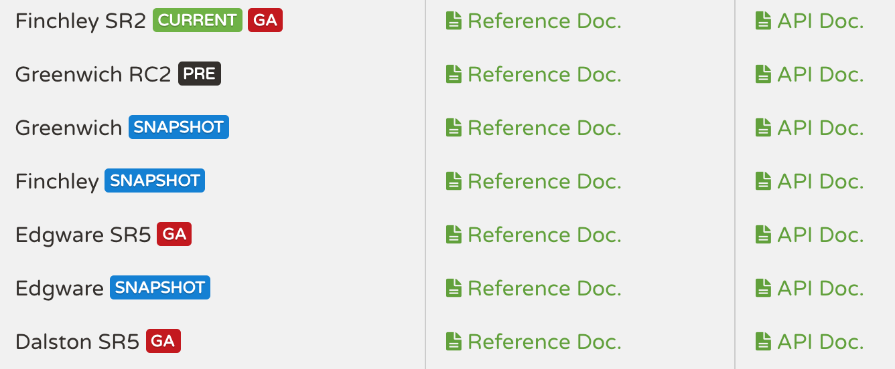

<!DOCTYPE HTML>
<html lang="zh-CN">
<head><meta name="generator" content="Hexo 3.8.0">
    <!--Setting-->
    <meta charset="UTF-8">
    <meta name="viewport" content="width=device-width, user-scalable=no, initial-scale=1.0, maximum-scale=1.0, minimum-scale=1.0">
    <meta http-equiv="X-UA-Compatible" content="IE=Edge,chrome=1">
    <meta http-equiv="Cache-Control" content="no-siteapp">
    <meta http-equiv="Cache-Control" content="no-transform">
    <meta http-equiv="pragma" content="no-cache">
    <meta http-equiv="Cache-Control" content="no-cache, must-revalidate">
    <meta http-equiv="expires" content="Mon Apr 06 2020 02:12:39 GMT+0800 (CST)">
    <meta name="renderer" content="webkit|ie-comp|ie-stand">
    <meta name="apple-mobile-web-app-capable" content="周立的博客 - 关注Spring Cloud、Docker">
    <meta name="apple-mobile-web-app-status-bar-style" content="black">
    <meta name="format-detection" content="telephone=no,email=no,adress=no">
    <meta name="browsermode" content="application">
    <meta name="screen-orientation" content="portrait">
    <meta name="theme-version" content="1.2.3">
    <meta name="root" content="/">
    
    <!--SEO-->

    <meta name="keywords" content="Spring Cloud">


    <meta name="description" content="前言·课程简介最近挺多童鞋在公众号（itmuch_com）上催更Spring Cloud系列教程，故有此系列。以下是几点说明/规划/答疑：
问：为什么基于Finchley，而非Greenwich？
答：就目前而言，Finchley更贴近生产，而Greenwich尚未发布——虽然已经RC了，但有...">


<meta name="robots" content="all">
<meta name="google" content="all">
<meta name="googlebot" content="all">
<meta name="verify" content="all">
    <!--Title-->


<title>跟我学Spring Cloud（Finchley版）-01-开篇 | 周立的博客 - 关注Spring Cloud、Docker</title>


    <link rel="alternate" href="../../atom.html" title="周立的博客 - 关注Spring Cloud、Docker" type="application/atom+xml">


    

    


<link rel="stylesheet" href="../../static/css/bootstrap.min-271a649e0635d6fa1b.css">
<link rel="stylesheet" href="../../static/css/font-awesome.min-ac2bebcf7fb5b26.css">
<link rel="stylesheet" href="../../static/css/style-6f3c140f6eee20e6591da00ec0.css">


    


    <script>
        var _hmt = _hmt || [];
        (function() {
            var hm = document.createElement("script");
            hm.src = "https://hm.baidu.com/hm.js?13766878cde148282622871dd245a973";
            var s = document.getElementsByTagName("script")[0];
            s.parentNode.insertBefore(hm, s);
        })();
    </script>


    

</head>

</html>
<!--[if lte IE 8]>
<style>
    html{ font-size: 1em }
</style>
<![endif]-->
<!--[if lte IE 9]>
<div style="ie">你使用的浏览器版本过低，为了你更好的阅读体验，请更新浏览器的版本或者使用其他现代浏览器，比如Chrome、Firefox、Safari等。</div>
<![endif]-->

<body>
    
    <nav class="main-navigation">
    <div class="container">
        <div class="row clearfix">
            <div class="col-md-12 column">
                <nav class="navbar navbar-default" style="background-color:#fff;border:0;margin-bottom:0" role="navigation">
                    <div class="navbar-header">
                        <button type="button" class="navbar-toggle" data-toggle="collapse" data-target="#navbar-collapse-1">
                            <span class="sr-only">切</span>
                            <span class="icon-bar"></span>
                            <span class="icon-bar"></span>
                            <span class="icon-bar"></span>
                        </button>
                        <a class="logo" href="../../index.html">
                            周立的博客
                        </a>
                    </div>

                    <div class="collapse navbar-collapse" style="border:0;" id="navbar-collapse-1">
                        <ul class="nav navbar-nav">
                            
                                
                                    <li>
                                        <a href="../../about.html" target="_blank">
                                            <i class="fa fa-user"></i>
                                            关于我
                                        </a>
                                    </li>
                                
                            
                                
                                    <li>
                                        <a href="../../archives.html" target="_blank">
                                            <i class="fa fa-archive"></i>
                                            归档
                                        </a>
                                    </li>
                                
                            
                                
                                    <li class="dropdown">
                                        <a href="#" class="dropdown-toggle" data-toggle="dropdown" data-hover="dropdown">
                                            <i class="fa fa-fire"></i>
                                            系列课程
                                            <strong class="caret"></strong>
                                        </a>
                                        <ul class="dropdown-menu">
                                            
                                                <li>
                                                    <a href="../../docker/00-docker-lession-index.html" target="_blank">
                                                        <i class="fa "></i>
                                                        Docker系列教程
                                                    </a>
                                                </li>
                                            
                                                <li>
                                                    <a href="../spring-cloud-index.html" target="_blank">
                                                        <i class="fa "></i>
                                                        Spring Cloud系列教程
                                                    </a>
                                                </li>
                                            
                                                <li>
                                                    <a href="../../spring-boot/spring-boot-index.html" target="_blank">
                                                        <i class="fa "></i>
                                                        Spring Boot系列教程
                                                    </a>
                                                </li>
                                            
                                        </ul>
                                    </li>
                                
                            
                                
                                    <li class="dropdown">
                                        <a href="#" class="dropdown-toggle" data-toggle="dropdown" data-hover="dropdown">
                                            <i class="fa fa-book"></i>
                                            开源书
                                            <strong class="caret"></strong>
                                        </a>
                                        <ul class="dropdown-menu">
                                            
                                                <li>
                                                    <a href="../../books/rocketmq.html" target="_blank">
                                                        <i class="fa fa-rocket"></i>
                                                        RocketMQ开发者指南
                                                    </a>
                                                </li>
                                            
                                                <li>
                                                    <a href="../../books/skywalking.html" target="_blank">
                                                        <i class="fa fa-skyatlas"></i>
                                                        Skywalking 6.2.0中文文档
                                                    </a>
                                                </li>
                                            
                                        </ul>
                                    </li>
                                
                            
                                
                                    <li class="dropdown">
                                        <a href="#" class="dropdown-toggle" data-toggle="dropdown" data-hover="dropdown">
                                            <i class="fa fa-cog"></i>
                                            工具
                                            <strong class="caret"></strong>
                                        </a>
                                        <ul class="dropdown-menu">
                                            
                                                <li>
                                                    <a href="../../tools/markdown2.html" target="_blank">
                                                        <i class="fa "></i>
                                                        微信排版工具2.0
                                                    </a>
                                                </li>
                                            
                                        </ul>
                                    </li>
                                
                            
                        </ul>
                        
                            <form id="search-form" class="navbar-form navbar-right">
                                <div class="form-group input-group">
                                    <input type="text" id="local-search-input" class="form-control" placeholder="搜我...">
                                    <span class="input-group-btn">
                                        <a class="btn btn-default">
                                            <i class="fa fa-search"></i>
                                        </a>
                                    </span>
                                </div>
                                <div id="local-search-result" class="local-search-result-cls"></div>
                            </form>
                        
                    </div>
                </nav>
            </div>
        </div>
    </div>
</nav>

    <a href="javascript:;" target="_blank">
        
    </a>


    <section class="content-wrap">
        <div class="container">
            <div class="row">
                <main class="col-md-8 main-content m-post">
                    

<p id="process"></p>
<article class="post">
    <div class="post-head">
        <h1 id="跟我学Spring Cloud（Finchley版）-01-开篇">
            
                跟我学Spring Cloud（Finchley版）-01-开篇
            
        </h1>
        <div class="post-meta">
    
        <span class="categories-meta fa-wrap">
            <i class="fa fa-folder-open-o"></i>
            <a class="category-link" href="javascript:;">Spring Cloud</a>
        </span>
    

    
        <span class="fa-wrap">
            <i class="fa fa-tags"></i>
            <span class="tags-meta">
                
                    <a class="tag-link" href="javascript:;">Spring Cloud</a>
                
            </span>
        </span>
    

    
        
        <span class="fa-wrap">
            <i class="fa fa-clock-o"></i>
            <span class="date-meta">2018/12/26</span>
        </span>
        
            <span class="fa-wrap">
                <i class="fa fa-eye"></i>
                <span id="busuanzi_value_page_pv"></span>
            </span>
        
    
</div>
        
        
    </div>
    
    <div class="post-body post-content" id="post-content">
        
    <div class="toc-article">
        <strong>
            目录
        </strong>
        <div class="toc-content">
            <ol class="toc"><li class="toc-item toc-level-2"><a class="toc-link" href="#前言·课程简介"><span class="toc-text">前言·课程简介</span></a></li><li class="toc-item toc-level-2"><a class="toc-link" href="#Spring-Cloud简介"><span class="toc-text">Spring Cloud简介</span></a></li><li class="toc-item toc-level-2"><a class="toc-link" href="#核心功能"><span class="toc-text">核心功能</span></a></li><li class="toc-item toc-level-2"><a class="toc-link" href="#版本简介"><span class="toc-text">版本简介</span></a></li><li class="toc-item toc-level-2"><a class="toc-link" href="#子项目一览"><span class="toc-text">子项目一览</span></a></li><li class="toc-item toc-level-2"><a class="toc-link" href="#Spring-Cloud-Spring-Boot兼容性【重要】"><span class="toc-text">Spring Cloud/Spring Boot兼容性【重要】</span></a></li></ol>
        </div>
    </div>


        <h2 id="前言·课程简介"><a href="#前言·课程简介" class="headerlink" title="前言·课程简介"></a>前言·课程简介</h2><p>最近挺多童鞋在公众号（itmuch_com）上催更Spring Cloud系列教程，故有此系列。以下是几点说明/规划/答疑：</p>
<p><strong>问：为什么基于Finchley，而非Greenwich？</strong></p>
<p><strong>答</strong>：就目前而言，Finchley更贴近生产，而Greenwich尚未发布——虽然已经RC了，但有挺多不确定因素，例如：Resilience4j是否会在Greenwich版本中成功孵化（应该是不会）、<code>spring-cloud-netflix-concurrency-limits</code> 文档一行都没有等等（搞不好项目被直接干掉也不一定……）还有很多其它未确定的点，导致笔者最终选择使用Finchley作为博客基础版本。未来，在Greenwich正式发布后，考虑升级到Greenwich，或者以番外的形式补充。</p>
<p><strong>问：系列课程怎么规划的？</strong></p>
<p><strong>答</strong>：分为主线故事和番外。主线故事讲Eureka、Ribbon、Feign、Hystrix、Zuul、Spring Cloud Config、Spring Cloud Gateway、Spring Cloud Sleuth、Spring Cloud Stream；番外讲Spring Cloud Consul、Spring Cloud R4j、Nacos、Sentinel；另外讲持续集成、持续发布、代码质量控制……暂时是这么规划的。</p>
<p><strong>问：我能从这套课程获得什么？</strong></p>
<p><strong>答</strong>：学习完，能比较深入了解Spring Cloud各组件的使用套路、能避过N多常见的坑（诸如Feign配置坑啦、Ribbon配置坑啦、父子上下文坑啦、状态UNKONWN坑啦，你可能不知道我在说什么，没关系，以后遇到了再来查文档就行）、理解各组件的工作原理及组件之间的关系。</p>
<p><strong>问：收费吗？</strong></p>
<p><strong>答</strong>：<strong>免费。</strong>极客时间曾两度找我约稿，我也确实考虑过收费。钱是好东西，我不是圣人，不过还是放弃了，赚钱的方式有很多，开源是我热爱的。我只要大家在提建议意见的时候别那么难听/难看就知足了。（为什么这么说，大家可以回溯一下我当初Spring Cloud开源视频下面的评论。太TM难看了）</p>
<p><strong>问：我该怎么学习这套教程呢？</strong></p>
<p><strong>答</strong>：我会在你需要注意的文字上<strong>【加粗】</strong>，重要知识点标记【<strong>重要</strong>】，在能拓展你视野的地方标记【<strong>TIPS</strong>】，在坑或者需要重点关注的地方标记【<strong>WARNING</strong>】；另外绝对不要忘记【<strong>拓展阅读</strong>】——这将是是拓展你知识面、开拓技术视野的一个重要途径。记住，永远别只去学习知识，知识是无穷无尽的，对于软件，知识还可能会变……你应该提升的是学习能力，并开拓技术视野。随着微服务/Cloud Native的深入人心，未来必然是整合能力 &gt; 单项技术能力。</p>
<p><strong>问：更新频率？不会太监吧？</strong></p>
<p><strong>答</strong>：目前已经完稿21篇，每周规划3更，但不固定周几更新。至于是否太监，我只能尽量不，我不是专职写开源文档的……工作很忙，一般得十点才能到宿舍，开始自己的生活；不一般的时候，没有生活。总之呢，看的人越多，我也会越有激情啊！</p>
<p><strong>问：你TM自问自答跟个精神病一样烦不烦？</strong></p>
<p><strong>答</strong>：我TM年纪大了，废话多点不可以吗……</p>
<p><strong>最后说一下，原创不易！如果课程对您有帮助，不要吝啬，请点转发！</strong>请喝咖啡就算了，咖啡让我失眠^_^</p>
<p>让我把废话到此为止吧！Let’s roll!</p>
<h2 id="Spring-Cloud简介"><a href="#Spring-Cloud简介" class="headerlink" title="Spring Cloud简介"></a>Spring Cloud简介</h2><p>尽管Spring Cloud带有“Cloud”的字样，但它并不是云计算解决方案，而<strong>是在Spring Boot基础上构建的，用于快速构建分布式系统的通用模式的工具集</strong>。</p>
<p>使用Spring Cloud开发的应用程序非常适合在Docker或者PaaS（例如Cloud Foundry）上部署，所以又叫做云原生应用（Cloud Native Application）。云原生（Cloud Native）可简单理解为面向云环境的软件架构。说到云原生，就不得不提一下《十二要素应用宣言（12-factor Apps）》，这是云原生架构的方法论与最佳实践。</p>
<p><strong>拓展阅读</strong></p>
<ul>
<li>《Cloud Native Application》电子书：<a href="javascript:;" target="_blank" rel="noopener">https://pivotal.io/platform-as-a-service/migrating-to-cloud-native-application-architectures-ebook</a></li>
<li>《十二要素应用宣言（12-factor Apps）》中文版：<a href="javascript:;" target="_blank" rel="noopener">https://12factor.net/zh_cn/</a></li>
</ul>
<h2 id="核心功能"><a href="#核心功能" class="headerlink" title="核心功能"></a>核心功能</h2><ul>
<li>Distributed/versioned configuration        分布式/版本化的配置管理</li>
<li>Service registration and discovery                     服务注册与服务发现</li>
<li>Routing                                                                   路由</li>
<li>Service-to-service calls                                         端到端的调用</li>
<li>Load balancing                                                      负载均衡</li>
<li>Circuit Breakers                                                     断路器</li>
<li>Global locks                                                           全局锁</li>
<li>Leadership election and cluster state               选举与集群状态管理</li>
<li>Distributed messaging                                        分布式消息</li>
</ul>
<h2 id="版本简介"><a href="#版本简介" class="headerlink" title="版本简介"></a>版本简介</h2><p>我们知道，大多数Spring项目都是以“主版本号.次版本号.增量版本号.里程碑版本号”的形式命名版本号的，例如Spring Framework稳定版本4.3.5.RELEASE、里程碑版本5.0.0.M4等。其中，主版本号表示项目的重大重构；次版本号表示新特性的添加和变化；增量版本号一般表示bug修复；里程碑版本号表示某版本号的里程碑。</p>
<p>然而，Spring Cloud并未使用这种方式管理版本。下面我们来详细探讨一下Spring Cloud的版本。</p>
<p>我们来看一下Spring Cloud的版本，如图所示。</p>
<p></p>
<p>由图可知，Spring Cloud是以<code>英文单词 SRX</code> 的形式命名版本号的。那么英文单词和SR分别表示什么呢？</p>
<p>Spring Cloud是一个综合项目，它包含很多的子项目。由于子项目也维护着自己的版本号，Spring Cloud采用了这种版本命名方式，从而避免与子项目的版本混淆。其中，英文单词叫做“release train”，Angel、Brixton、Camden等都是伦敦地铁站的名称，它们按照字母顺序发行，我们可将其理解为主版本的演进。SR表示“Service Release”，一般表示Bug修复；在SR版本发布之前，会先发布一个Release版本，例如Camden RELEASE。</p>
<p>经过以上讲解，相信大家就能很好地理解Spring Cloud的版本了。例如，Camden SR3表示Camden版本的第3次Bug修复版本。</p>
<p><strong>TIPS</strong></p>
<ul>
<li><p>Spring Cloud版本发布记录可详见：<a href="javascript:;" target="_blank" rel="noopener">https://github.com/spring-cloud/spring-cloud-release/releases</a> ，从中我们可清晰看到Spring Cloud版本发布的时间及先后顺序。</p>
</li>
<li><p>Spring Cloud版本演进计划：<a href="javascript:;" target="_blank" rel="noopener">https://github.com/spring-cloud/spring-cloud-release/milestones</a> ，从中我们可了解Spring Cloud的版本演进计划，例如计划什么时间点发布什么版本等。</p>
</li>
<li><p>事实上，Spring有不少项目使用类似的命名方式。例如<a href="javascript:;" target="_blank" rel="noopener">Spring Data</a>、<a href="javascript:;" target="_blank" rel="noopener">Spring Cloud Stream</a>等。</p>
</li>
</ul>
<h2 id="子项目一览"><a href="#子项目一览" class="headerlink" title="子项目一览"></a>子项目一览</h2><p>理解Spring Cloud的版本后，我们来看一下各版本Spring Cloud包含的子项目及版本。不同的Spring Cloud版本有不同的子项目：</p>
<table>
<thead>
<tr>
<th>Component</th>
<th>Edgware.SR5</th>
<th>Finchley.SR2</th>
<th>Finchley.BUILD-SNAPSHOT</th>
</tr>
</thead>
<tbody>
<tr>
<td>spring-cloud-aws</td>
<td>1.2.3.RELEASE</td>
<td>2.0.1.RELEASE</td>
<td>2.0.1.BUILD-SNAPSHOT</td>
</tr>
<tr>
<td>spring-cloud-bus</td>
<td>1.3.3.RELEASE</td>
<td>2.0.0.RELEASE</td>
<td>2.0.1.BUILD-SNAPSHOT</td>
</tr>
<tr>
<td>spring-cloud-cli</td>
<td>1.4.1.RELEASE</td>
<td>2.0.0.RELEASE</td>
<td>2.0.1.BUILD-SNAPSHOT</td>
</tr>
<tr>
<td>spring-cloud-commons</td>
<td>1.3.5.RELEASE</td>
<td>2.0.2.RELEASE</td>
<td>2.0.2.BUILD-SNAPSHOT</td>
</tr>
<tr>
<td>spring-cloud-contract</td>
<td>1.2.6.RELEASE</td>
<td>2.0.2.RELEASE</td>
<td>2.0.2.BUILD-SNAPSHOT</td>
</tr>
<tr>
<td>spring-cloud-config</td>
<td>1.4.5.RELEASE</td>
<td>2.0.2.RELEASE</td>
<td>2.0.2.BUILD-SNAPSHOT</td>
</tr>
<tr>
<td>spring-cloud-netflix</td>
<td>1.4.6.RELEASE</td>
<td>2.0.2.RELEASE</td>
<td>2.0.2.BUILD-SNAPSHOT</td>
</tr>
<tr>
<td>spring-cloud-security</td>
<td>1.2.3.RELEASE</td>
<td>2.0.1.RELEASE</td>
<td>2.0.1.BUILD-SNAPSHOT</td>
</tr>
<tr>
<td>spring-cloud-cloudfoundry</td>
<td>1.1.2.RELEASE</td>
<td>2.0.1.RELEASE</td>
<td>2.0.1.BUILD-SNAPSHOT</td>
</tr>
<tr>
<td>spring-cloud-consul</td>
<td>1.3.5.RELEASE</td>
<td>2.0.1.RELEASE</td>
<td>2.0.2.BUILD-SNAPSHOT</td>
</tr>
<tr>
<td>spring-cloud-sleuth</td>
<td>1.3.5.RELEASE</td>
<td>2.0.2.RELEASE</td>
<td>2.0.2.BUILD-SNAPSHOT</td>
</tr>
<tr>
<td>spring-cloud-stream</td>
<td>Ditmars.SR4</td>
<td>Elmhurst.SR1</td>
<td>Elmhurst.BUILD-SNAPSHOT</td>
</tr>
<tr>
<td>spring-cloud-zookeeper</td>
<td>1.2.2.RELEASE</td>
<td>2.0.0.RELEASE</td>
<td>2.0.1.BUILD-SNAPSHOT</td>
</tr>
<tr>
<td>spring-boot</td>
<td>1.5.16.RELEASE</td>
<td>2.0.6.RELEASE</td>
<td>2.0.7.BUILD-SNAPSHOT</td>
</tr>
<tr>
<td>spring-cloud-task</td>
<td>1.2.3.RELEASE</td>
<td>2.0.0.RELEASE</td>
<td>2.0.1.BUILD-SNAPSHOT</td>
</tr>
<tr>
<td>spring-cloud-vault</td>
<td>1.1.2.RELEASE</td>
<td>2.0.2.RELEASE</td>
<td>2.0.2.BUILD-SNAPSHOT</td>
</tr>
<tr>
<td>spring-cloud-gateway</td>
<td>1.0.2.RELEASE</td>
<td>2.0.2.RELEASE</td>
<td>2.0.2.BUILD-SNAPSHOT</td>
</tr>
<tr>
<td>spring-cloud-openfeign</td>
<td></td>
<td>2.0.2.RELEASE</td>
<td>2.0.2.BUILD-SNAPSHOT</td>
</tr>
<tr>
<td>spring-cloud-function</td>
<td>1.0.1.RELEASE</td>
<td>1.0.0.RELEASE</td>
<td>1.0.1.BUILD-SNAPSHOT</td>
</tr>
</tbody>
</table>
<h2 id="Spring-Cloud-Spring-Boot兼容性【重要】"><a href="#Spring-Cloud-Spring-Boot兼容性【重要】" class="headerlink" title="Spring Cloud/Spring Boot兼容性【重要】"></a>Spring Cloud/Spring Boot兼容性【重要】</h2><table>
<thead>
<tr>
<th>Spring Cloud版本</th>
<th>Spring Boot版本</th>
</tr>
</thead>
<tbody>
<tr>
<td>Greenwich</td>
<td>2.1.x</td>
</tr>
<tr>
<td>Finchley</td>
<td>2.0.x</td>
</tr>
<tr>
<td>Edgware</td>
<td>1.5.x</td>
</tr>
<tr>
<td>Dalston</td>
<td>1.5.x</td>
</tr>
</tbody>
</table>
<p>可前往<a href="javascript:;" target="_blank" rel="noopener">https://spring.io/projects/spring-cloud#overview</a>查看版本兼容性。</p>

        <h2>相关文章</h2><ul><li><a href="../finchley-5/index.html">跟我学Spring Cloud（Finchley版）-05-服务注册与服务发现-Eureka入门</a></li><li><a href="../../spring-cloud-feign-ribbon-first-request-fail/index.html">Spring Cloud中，如何解决Feign/Ribbon第一次请求失败的问题？</a></li><li><a href="../../spring-cloud-sum-eureka/index.html">Spring Cloud中，Eureka常见问题总结</a></li><li><a href="../../advertisment/my-spring-book/index.html">《Spring Cloud与Docker微服务实战》实体书目录</a></li><li><a href="../../advertisment/my-spring-book-code/index.html">《Spring Cloud与Docker微服务架构实战》配套代码</a></li></ul>
    </div>
    
    <div class="post-footer">
        <div class="col-sm-10">
            <div>
                <b>本文链接</b>：<a href="" target="_blank">跟我学Spring Cloud（Finchley版）-01-开篇</a>
            </div>
            <div>
                
                    转载声明：本博客由周立创作，采用 <a href="javascript:;" target="_blank"> CC BY 3.0 CN </a> 许可协议。可自由转载、引用，但需署名作者且注明文章出处。如转载至微信公众号，请在文末添加作者公众号二维码。
                
            </div>
            <div>
                
            </div>
        </div>
        <div class="col-sm-2">
            
        </div>
    </div>
</article>

<div class="article-nav prev-next-wrap clearfix">
    
        <a target="_blank" href="../finchley-2/index.html" class="pre-post btn btn-default" title="跟我学Spring Cloud（Finchley版）-02-构建分布式应用">
            <i class="fa fa-angle-left fa-fw"></i><span class="hidden-lg">上一篇</span>
            <span class="hidden-xs">跟我学Spring Cloud（Finchley版）-02-构建分布式应用</span>
        </a>
    
    
        <a target="_blank" href="../../spring-cloud-sum/spring-cloud-netflix-in-maintenance-mode/index.html" class="next-post btn btn-default" title="Spring Cloud Netflix项目进入维护模式之我见">
            <span class="hidden-lg">下一篇</span>
            <span class="hidden-xs">Spring Cloud Netflix项目进入维护模式之我见</span><i class="fa fa-angle-right fa-fw"></i>
        </a>
    
</div>


    <div id="comments">
        
   <p>评论系统未开启，无法评论！</p>

    </div>


                </main>
                
    <aside class="col-md-4 sidebar">
        
        <div class="widget about-me">
    <div class="row">
        <div class="col-md-5">
            
        </div>
        <div class="col-md-7">
            <a class="series-a" href="javascript:void(0)">公众号</a>
            <ul>
                <li>• 技术干货推送</li>
                <li>• 免费资料领取</li>
                <li><b>• 扫码领取更多惊喜</b></li>
            </ul>
        </div>
    </div>
    
        <div class="row">
            <div class="col-md-5">
                
            </div>
            <div class="col-md-7">
                <a class="series-a" href="javascript:void(0)">小程序</a>
                <ul>
                    <li>• 原创笔记</li>
                    <li>• 独家心法</li>
                    <li><b>• 扫码领取</b></li>
                </ul>
            </div>
        </div>
    
</div>


        
        
    <div class="ad">
        <div class="row">
            <div class="col-md-12">
                <a href="javascript:;" rel="nofollow" target="_blank">
                    
                </a>
            </div>
        </div>
    </div>


        
        <div class="widget">
    <div class="row">
        <div class="col-md-3">
            
        </div>
        <div class="col-md-9">
            <a class="series-a" target="_blank" href="../spring-cloud-index.html">Spring Cloud系列教程</a>
            <p>全面、通俗易懂的Spring Cloud教程</p>
        </div>
    </div>
    <div class="row">
        <div class="col-md-3">
            
        </div>
        <div class="col-md-9">
            <a class="series-a" target="_blank" href="javascript:;">Spring Cloud Alibaba视频教程</a>
            <p>全网唯一，你值得拥有</p>
        </div>
    </div>
    <div class="row">
        <div class="col-md-3">
            
        </div>
        <div class="col-md-9">
            <a class="series-a" target="_blank" href="../../docker/00-docker-lession-index.html">Docker系列教程</a>
            <p>Docker系列</p>
        </div>
    </div>
    <div class="row">
        <div class="col-md-3">
            
        </div>
        <div class="col-md-9">
            <a class="series-a" target="_blank" href="../../spring-boot/spring-boot-index.html">Spring Boot系列教程</a>
            <p>Boot是基石...</p>
        </div>
    </div>
</div>


        
        
    <div class="widget">
        <h3 class="title">分类</h3>
        <ul class="category-list"><li class="category-list-item"><a class="category-list-link" href="javascript:;"><i class="fa" aria-hidden="true">Docker</i></a><span class="category-list-count">31</span></li><li class="category-list-item"><a class="category-list-link" href="javascript:;"><i class="fa" aria-hidden="true">Kubernetes</i></a><span class="category-list-count">2</span></li><li class="category-list-item"><a class="category-list-link" href="javascript:;"><i class="fa" aria-hidden="true">Spring Boot</i></a><span class="category-list-count">6</span></li><li class="category-list-item"><a class="category-list-link current" href="javascript:;"><i class="fa" aria-hidden="true">Spring Cloud</i></a><span class="category-list-count">94</span></li><li class="category-list-item"><a class="category-list-link" href="javascript:;"><i class="fa" aria-hidden="true">Spring Cloud Alibaba</i></a><span class="category-list-count">16</span></li><li class="category-list-item"><a class="category-list-link" href="javascript:;"><i class="fa" aria-hidden="true">Spring Cloud Stream</i></a><span class="category-list-count">1</span></li><li class="category-list-item"><a class="category-list-link" href="../../categories/其他/index.html"><i class="fa" aria-hidden="true">其他</i></a><span class="category-list-count">13</span></li><li class="category-list-item"><a class="category-list-link" href="../../categories/安装教程/index.html"><i class="fa" aria-hidden="true">安装教程</i></a><span class="category-list-count">7</span></li><li class="category-list-item"><a class="category-list-link" href="../../categories/工作/index.html"><i class="fa" aria-hidden="true">工作</i></a><span class="category-list-count">20</span></li></ul>
    </div>


        
        
        
        

        
    </aside>

            </div>
        </div>
    </section>
    <footer class="main-footer">
    <div class="container">
        <div class="row">
        </div>
    </div>
</footer>

<a id="back-to-top" class="icon-btn hide">
	<i class="fa fa-chevron-up"></i>
</a>


    <div class="copyright">
    <div class="container">
        <div class="row">
            <div class="col-sm-12">
                <div class="busuanzi">
    
        访问量:
        <strong id="busuanzi_value_site_pv">
            <i class="fa fa-spinner fa-spin"></i>
        </strong>
        &nbsp; | &nbsp;
        访客数:
        <strong id="busuanzi_value_site_uv">
            <i class="fa fa-spinner fa-spin"></i>
        </strong>
        &nbsp; <strong>Since 2018-12-26</strong>
    
</div>

            </div>
            <div class="col-sm-12">
                <span>Copyright &copy; 2017
                </span> |
                <span>
                    Powered by <a href="javascript:;" class="copyright-links" target="_blank" rel="nofollow">Hexo</a>
                </span> |
                <span>
                    Theme by <a href="javascript:;" class="copyright-links" target="_blank" rel="nofollow">ITMuch</a>
                </span>
            </div>
        </div>
    </div>
</div>

<script src="../../static/js/jquery.min.js"></script>
<script src="../../static/js/bootstrap.min.js"></script>
<script src="../../static/js/bootstrap-hover-dropdown.min.js"></script>

    <script src="../../static/js/search-3f4fbd0557c869ca0516ebb5f.js"></script>


    <script async="" src="../../static/js/busuanzi.pure.mini.js"></script>


<script src="../../static/js/app-da10bb3b2ae5c8348d2bd2cc3faf.js"></script>


</body>
